正则表达式可以：
1. 测试字符串的某个模式，例如可以对一个输入字符串进行测试，看该字符串是否存在一个电话号码的模式，这称为数据有效性验证
2. 替换文本，可以在文档中使用一个正则表达式来标识特定文字，然后可以全部将其删除，或者替换为别的文字
3. 根据模式匹配从字符串中提取一个子字符串，可以用来在文本或输入字段中查找特定文字
JS通过内置对象RegExp支持正则表达式
有两种方法实例化RegExp对象
1.字面量
var reg = /\bis\b/g;
g:golol全文匹配
\b:单词边界
2.构造函数
var reg = new RegExp('\\bis\\b',g);
i:ignore case 忽略大小写
‘He is a boy.Is he?’.repalce(/\bis\b/gi,0)
m:多行搜索
基本字符类型
1.原义文本字符
2.元字符：在正则表达式中有特殊含义的非字母字符
.*+？^$
1.一般情况下正则表达式一个字符对应字符串一个字符
ab\t :"ab"和水平制表符
2.匹配一类字符
[abc]把字符a或b或c归为一类，表达式可以匹配这类字符 one of "a""b""c"
'a1b2c3'.replace(/[abc]/g,'x')
==>"x1x2x3"
使用^创建反向类
反向类：不属于某类的内容
'a1b2c3'.replace(/[^abc]/g,'x')
==>"axbxcx"
[a-z]：a到z的任意字符
‘a1b2c3x4z9’.replace(/[a-z]/g,'Q')
==>"Q1Q2A3A4A9"
大小写匹配 [a-zA-Z]可连写
‘a1A1b2c3x4z9’.replace(/[a-zA-Z]/g,'Q')
==>"Q1Q1Q2A3A4A9"
匹配横线
‘1-1-2-3-4-9’.replace(/[0-9-]/g,'Q')
==>"QQQQQQQQQ"
: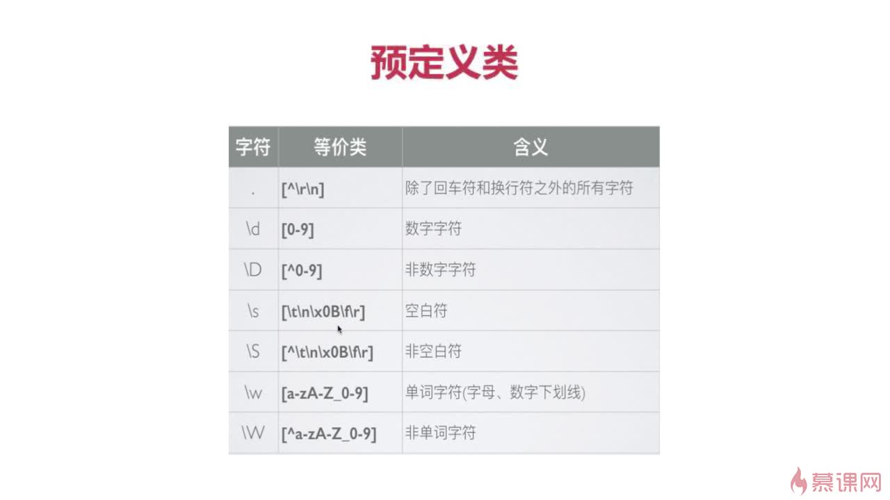
: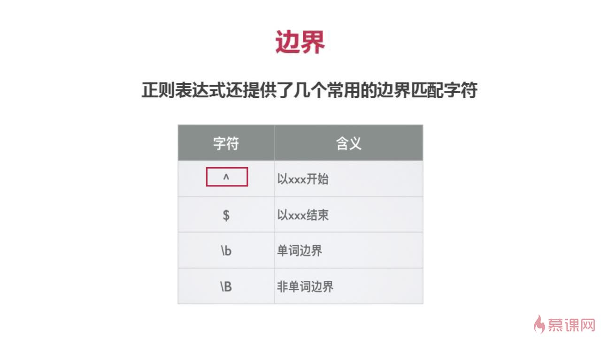
@123@abc.replac(/^@./g,'x')
-->x123@abc
: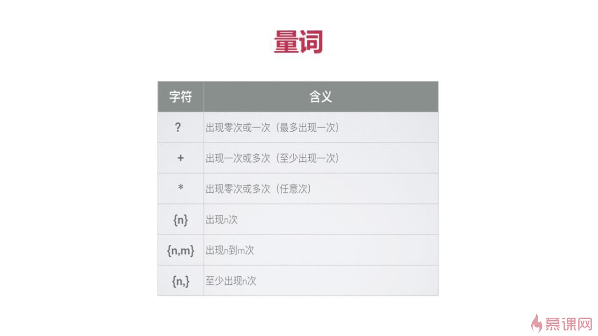
尽可能多得匹配
‘12345678’.replace(/\d{3,6}/g,'X')
-->"X78"
一但匹配成功不进行匹配：在量词后加？
不想捕获某分组，在分组内加上?:
: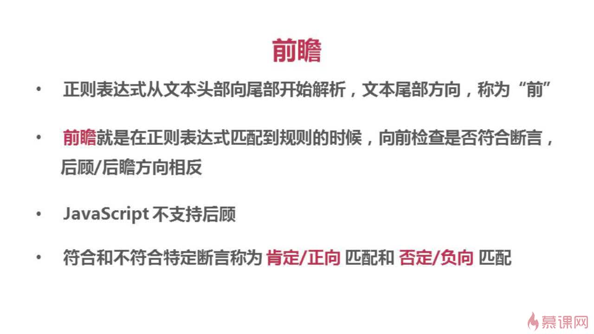 正向前瞻：exp(?=assert) 负向前瞻:exp(?!assert)
‘a2*34v8’.replace(/\w(?=\d)/g,'x')
(?=\d)断言
==》x2*x4x8
: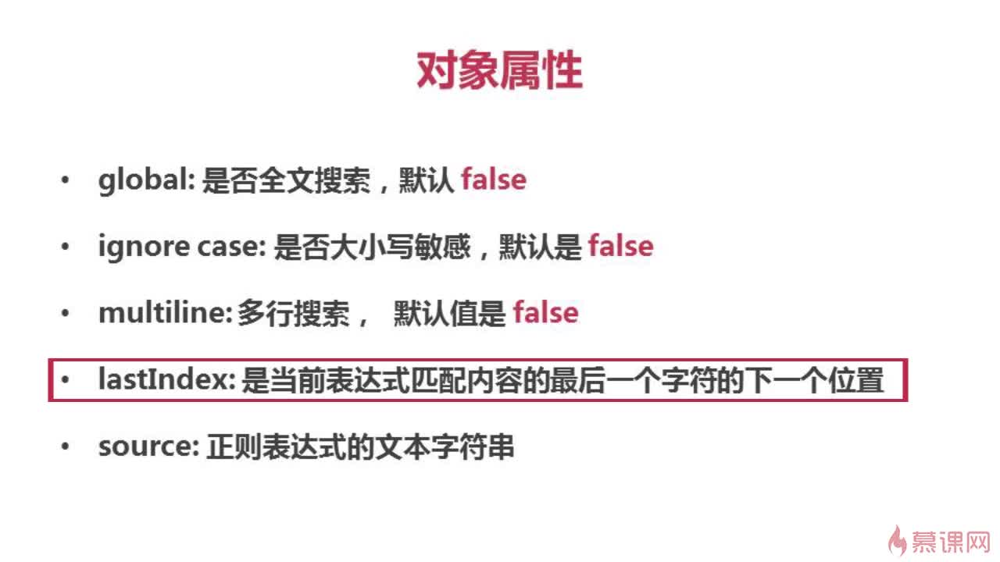
var reg1 = /\w/;
var reg2 = /\w/gim;
reg1.global
==>false
reg2.global
==>true
reg1.source
"\w"
: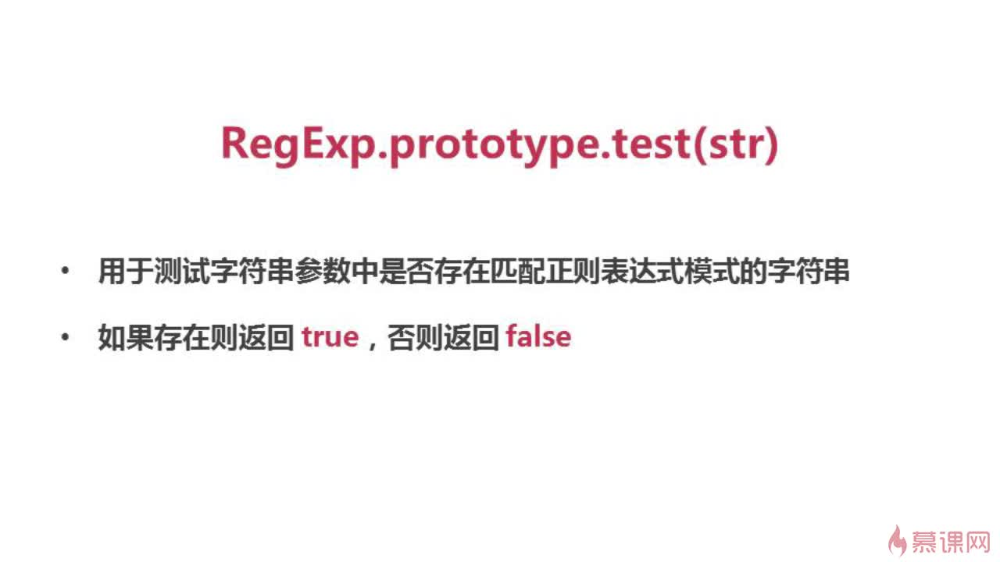 :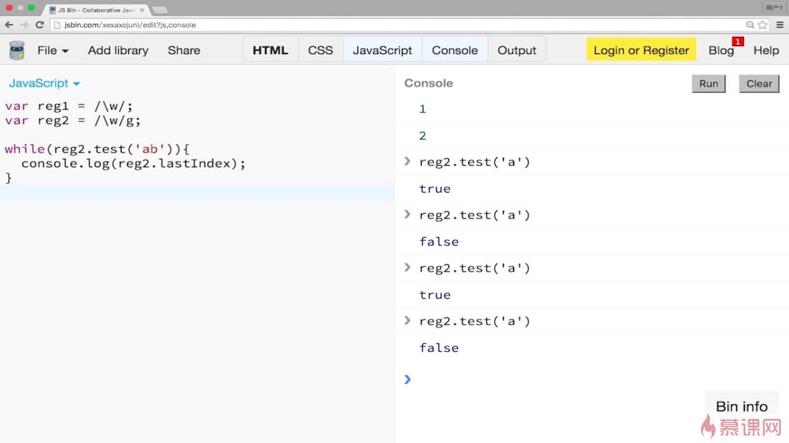
: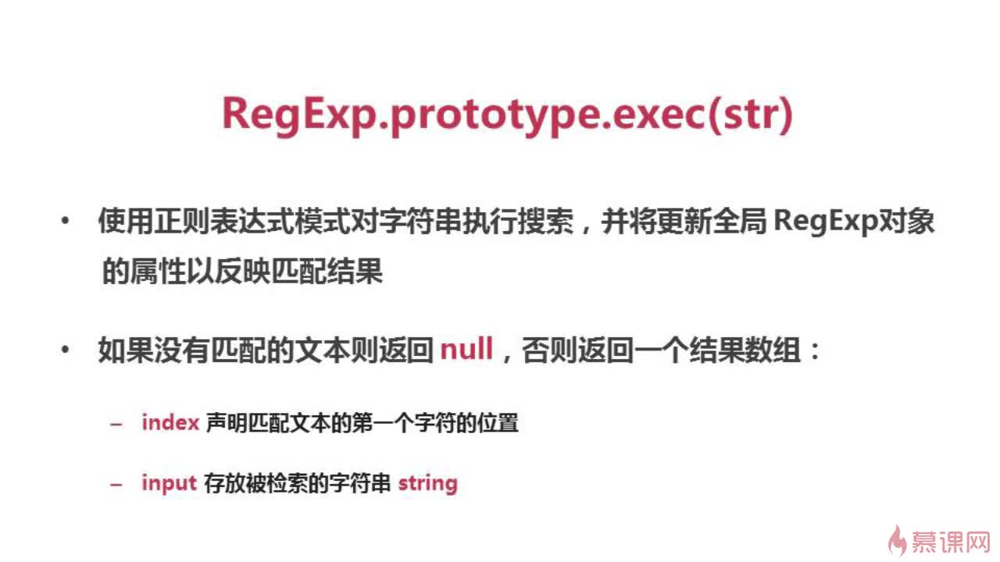
: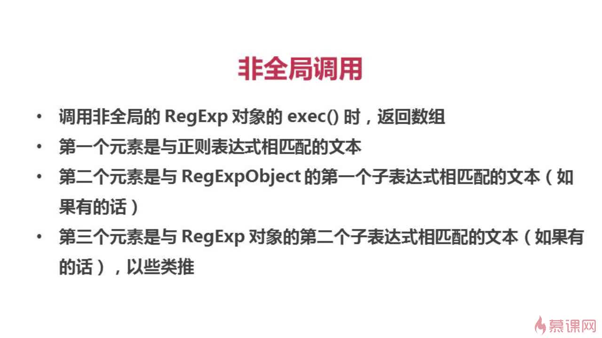
: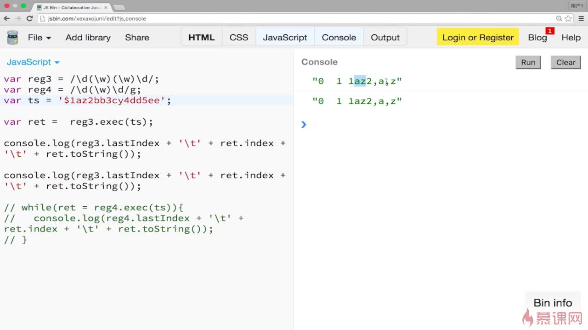
全局调用
:
: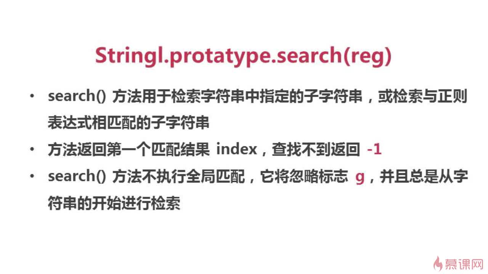
: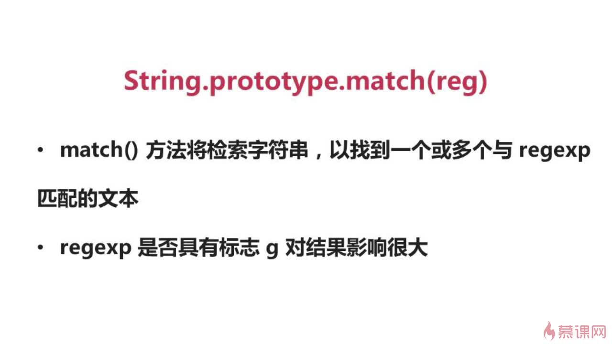 非全局调用 :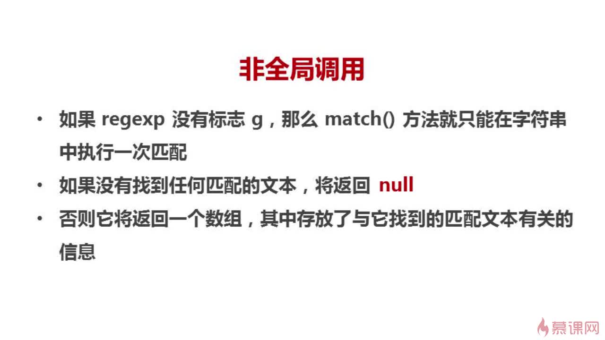 :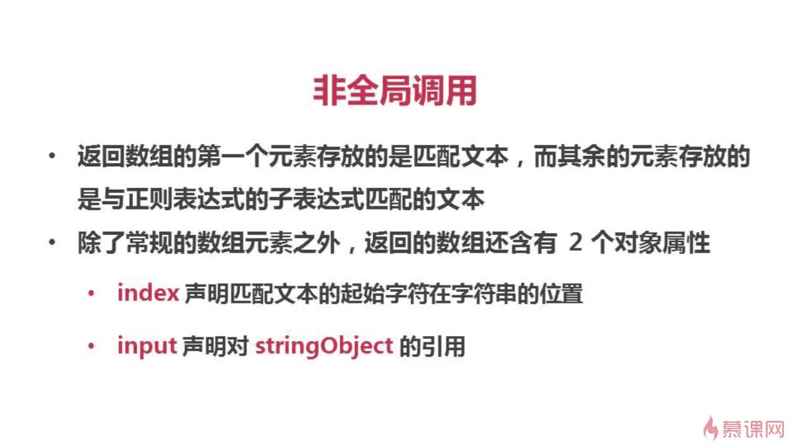 全局调用 :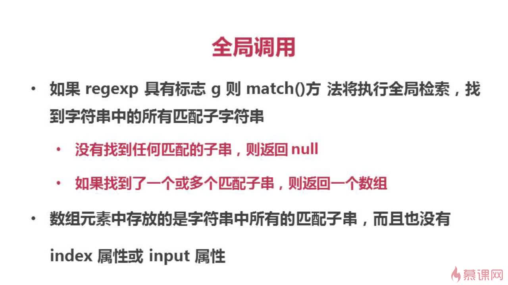
: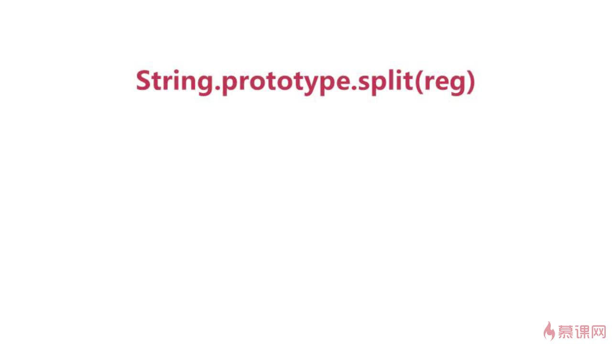
: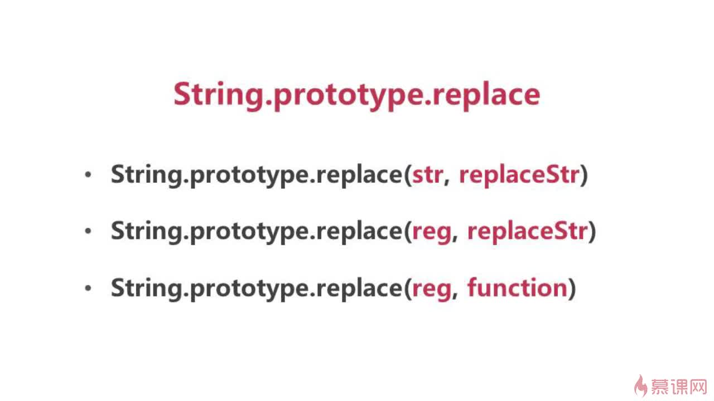 :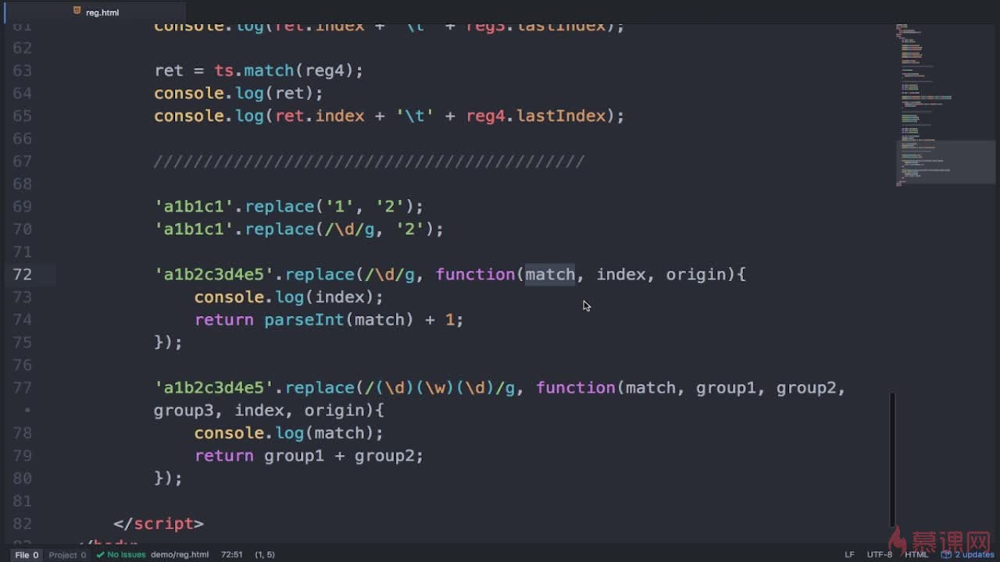